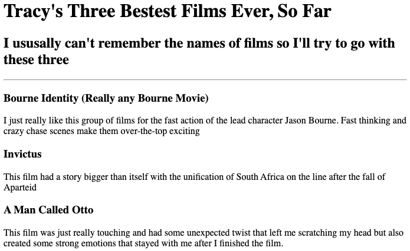

<!-- TODO 1: Create the HTML Boilerplate -->
<!DOCTYPE html>
<html lang="en">
<head>
    <meta charset="UTF-8">
    <meta name="viewport" content="width=device-width, initial-scale=1.0">
    <title>Middle School MathEd</title>
</head>
<body>
   
</html>
<!-- TODO 2: Add Your previous projects' HTML into the public folder -->

<!-- TODO 3: Take screenshots of your project previews and add the images to the images folder -->

<!-- TODO 4: Add titles/subtitles etc. -->
<h1>MS MathEd Website for UICS</h1>
<h3>by Tracy McDiarmid</h3>
<a href="./public/about.html">About Me</a>
<hr>
<h2>Projects And Experience</h2>


<h3><a href="./public/movie-ranking.html"> Top 3 Best Movie Rankings<a/></h3>
    
<h3><a href="public/birthday-invite.html">Birthday Invite</a></h3>


<!-- TODO 5: Add a link to the project pages -->

<!-- TODO 6: Add images to show the project previews
HINT for TODO 6: You can use the height attribute set to 200 to make the image smaller:
https://developer.mozilla.org/en-US/docs/Web/HTML/Element/img#attr-height -->

<!-- TODO 7: Add the Contact Me and About Me page links -->
<a href="./public/contact.html">Contact Me</a>
</body>